<title>Balances and Hover Ring</title>
<meta name="claude:viewport-fit-sides" content="cover">
<style>
/* Questions first, then real pictures of the app; dark like the app itself. */
:root{--bg:#0d1117;--panel:#161b22;--edge:#2a313b;--ink:#e8edf2;--ink2:#9aa6b2;--cyan:#3BC6E8;--red:#ff4d4d;--amber:#F2C879;color-scheme:dark;
--sans:"Inter",system-ui,-apple-system,"Segoe UI",sans-serif}
@media (prefers-color-scheme: dark){:root:not([data-theme="light"]){--bg:#0d1117;--panel:#161b22;--ink:#e8edf2}}
:root[data-theme="dark"]{--bg:#0d1117;--panel:#161b22;--ink:#e8edf2}
body{background:var(--bg);color:var(--ink);font-family:var(--sans);font-size:16px;line-height:1.5;margin:0;
padding-left:max(16px,env(safe-area-inset-left,0px));padding-right:max(16px,env(safe-area-inset-right,0px));padding-block:20px 48px}
main{max-width:1000px;margin:0 auto;display:grid;gap:26px}
h1{font-size:22px;margin:0;text-wrap:balance}
h2{font-size:18px;margin:0 0 6px}
h3{font-size:16px;margin:0}
p{margin:0;max-width:70ch}
.ask{background:var(--panel);border:1px solid var(--cyan);border-radius:10px;padding:16px;display:grid;gap:12px}
.ask ol{margin:0;padding-left:22px;display:grid;gap:10px}
.rec{color:var(--cyan);font-weight:600}
.shot{display:grid;gap:6px;align-content:start}
.frame{position:relative;border:1px solid var(--edge);border-radius:8px;overflow:hidden}
.frame img{display:block;width:100%;height:auto;cursor:zoom-in}
.mk{position:absolute;border:3px solid var(--red);border-radius:4px;pointer-events:none}
.tag{position:absolute;background:var(--red);color:#fff;font-weight:700;font-size:12px;padding:1px 7px;border-radius:10px;pointer-events:none;white-space:nowrap}
.cap{color:var(--ink2);font-size:14px}
.phones{display:grid;grid-template-columns:repeat(2,minmax(0,1fr));gap:12px}
@media(min-width:760px){.phones{grid-template-columns:repeat(4,minmax(0,1fr))}}
.two{display:grid;gap:16px}
@media(min-width:760px){.two{grid-template-columns:1fr 1fr}}
section{display:grid;gap:14px}
hr{border:0;border-top:1px solid var(--edge);margin:4px 0}
a{color:var(--cyan)}
dialog{padding:0;border:0;background:#000;max-width:96vw;max-height:96vh}
dialog img{max-width:96vw;max-height:96vh;display:block}
</style>
<main>
  <h1>Leave War — the Balances page and the hover ring</h1>

  <section class="ask">
    <h2>Two questions</h2>
    <ol>
      <li><b>Balances page: which option, A, B or C?</b> All three put every heading straight over its boxes. They differ in how a pending figure is shown. <span class="rec">I recommend A</span>: each pending figure becomes a dashed amber tag that says it in words — "2.5 pending", "1 pending" — with no minus sign. The dashed edge is the same look a pending bid already has on the grid. <a href="#bal">Pictures ↓</a></li>
      <li><b>Hover ring: build it as drawn?</b> On a PC, the one day under the mouse gets a thin cyan ring with a hollow middle, the same strength as a tapped day's ring. <span class="rec">I recommend yes</span>, and keeping today's faint row tint under it. <a href="#ring">Pictures ↓</a></li>
    </ol>
    <p class="cap">Tap any picture to see it full size.</p>
  </section>

  <section id="bal">
    <h2>1 · The Balances page</h2>
    <p>Ranger is the man with leave waiting for approval: 2.5 days of LVE, 1 of CCL, 0.5 of PL and 1 of CL. His row is marked in red on each picture.</p>

    <div class="shot">
      <h3>Today</h3>
      <div class="frame">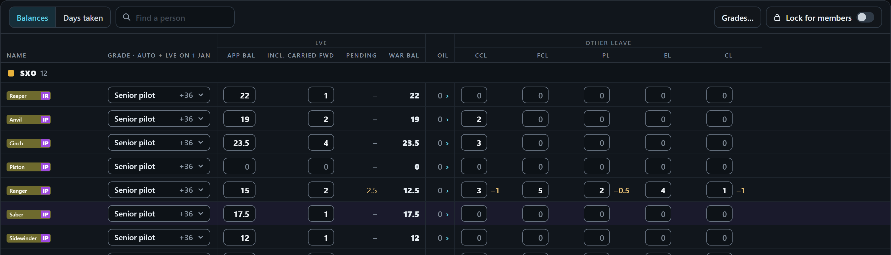
        <div class="mk" style="left:22%;top:18%;width:63%;height:13%"></div><div class="tag" style="left:22%;top:12%">headings not over their boxes</div>
        <div class="mk" style="left:39%;top:69%;width:47%;height:10%"></div><div class="tag" style="left:60%;top:81%">"−2.5", "−1": read as days taken</div>
      </div>
      <p class="cap">"INCL. CARRIED FWD" stands well left of its box, the CCL to CL boxes sit left of their headings, and the amber figures carry a minus sign, so some people read them as days already taken this year.</p>
    </div>

    <div class="shot">
      <h3>A — dashed tag with the word "pending" (recommended)</h3>
      <div class="frame">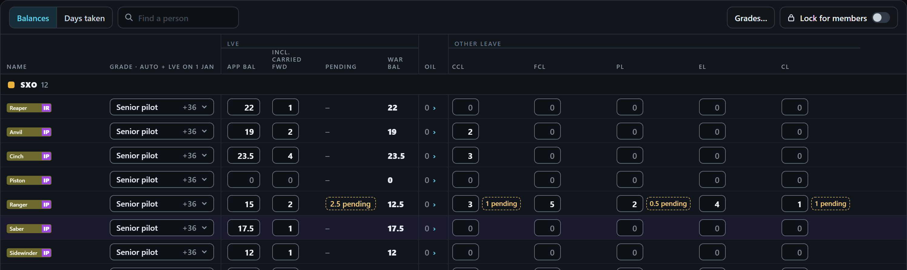
        <div class="mk" style="left:35%;top:71%;width:59%;height:9.5%"></div><div class="tag" style="left:60%;top:82%">"2.5 pending", "1 pending"</div>
      </div>
      <p class="cap">Every column starts at its heading, as the Approvals list does. LVE and OTHER LEAVE sit at the start of their groups, their lines running exactly over their own columns. A long heading wraps to two lines instead of making its column wide. The pending tag sits just right of its box.</p>
    </div>

    <div class="shot">
      <h3>B — the figure alone, on the box's corner</h3>
      <div class="frame">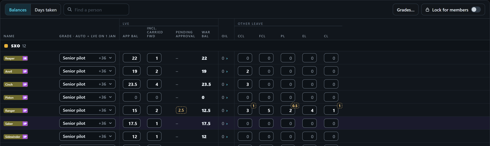
        <div class="mk" style="left:34%;top:66%;width:34%;height:14%"></div><div class="tag" style="left:40%;top:82%">small tag on the box's corner</div>
      </div>
      <p class="cap">The same layout, with narrower columns. LVE's column is headed "PENDING APPROVAL" and shows "2.5" in the dashed tag. For other leave, a small "1" rides the top corner of its box. It is tidy, but without the word some people may still not know what the small number means.</p>
    </div>

    <div class="shot">
      <h3>C — all pending figures in a group of their own</h3>
      <div class="frame">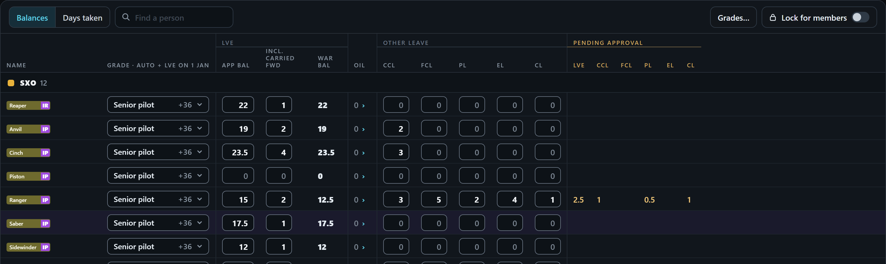
        <div class="mk" style="left:61%;top:12%;width:17%;height:69%"></div><div class="tag" style="left:61%;top:84%">PENDING APPROVAL group</div>
      </div>
      <p class="cap">The balances are clean columns of boxes with no amber among them. A last group, "PENDING APPROVAL", has one column for each kind. The cost: a pending figure stands far from the balance it comes off, and on a phone it is at the far end of the slide.</p>
    </div>

    <h3>On your iPhone (402 wide)</h3>
    <p class="cap">First picture: the page as it opens. Second: the same page slid sideways to the other leave. Ranger is the fifth name down.</p>
    <div class="phones">
      <div class="shot"><div class="frame">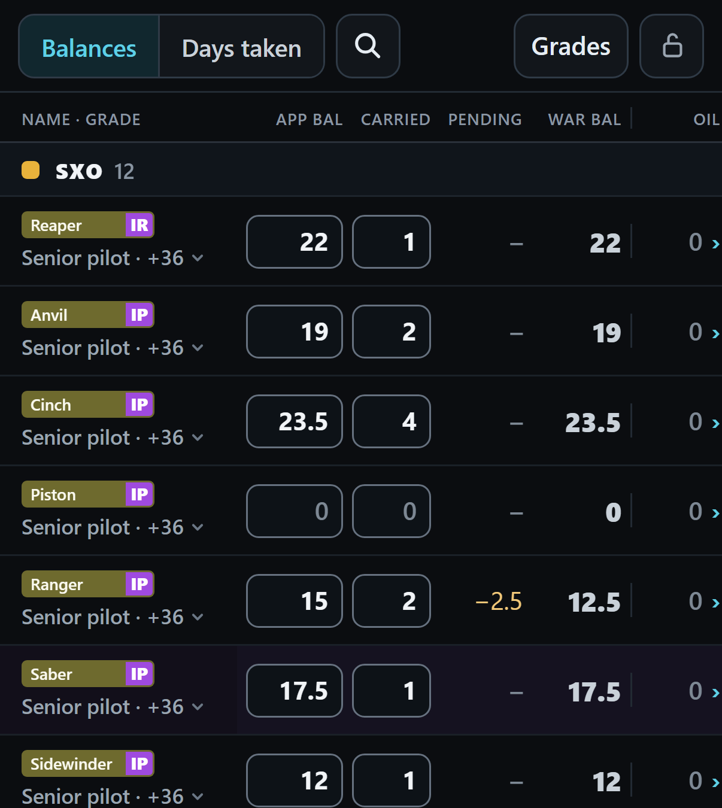<div class="mk" style="left:0;top:69%;width:100%;height:11%"></div></div><p class="cap">Today</p></div>
      <div class="shot"><div class="frame">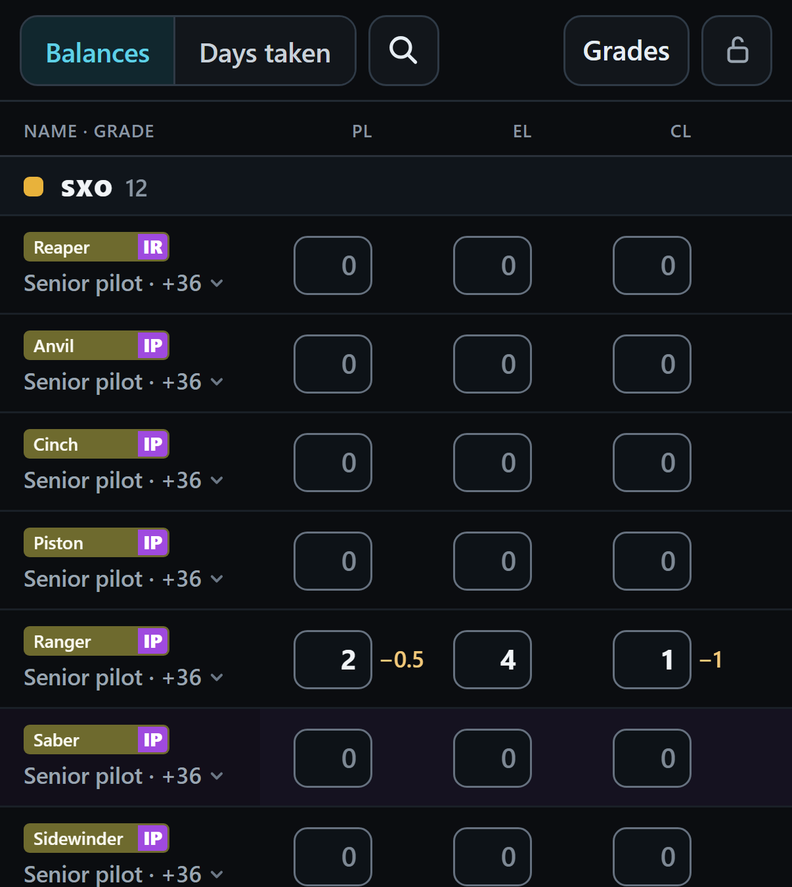<div class="mk" style="left:0;top:69%;width:100%;height:11%"></div></div><p class="cap">Today, slid</p></div>
      <div class="shot"><div class="frame">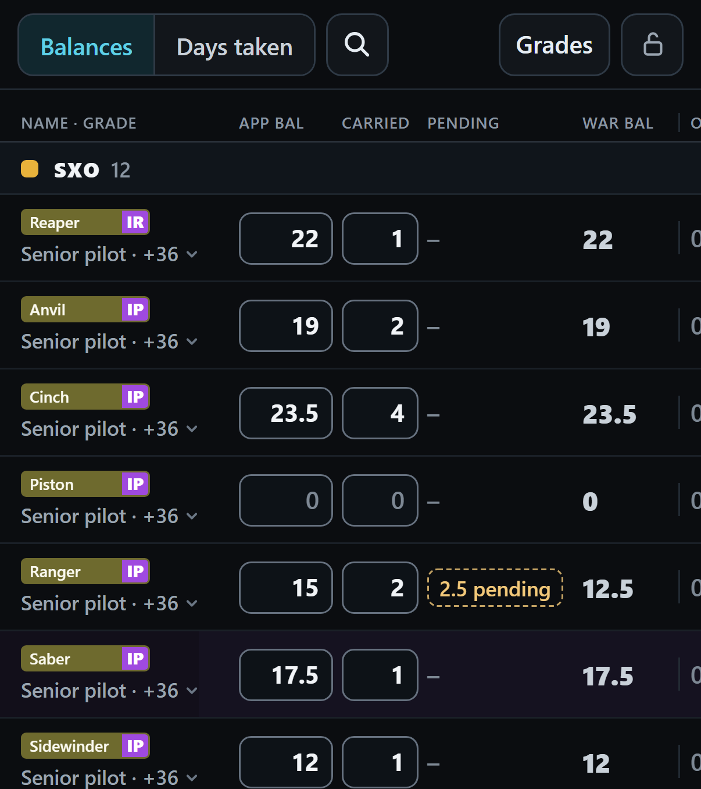<div class="mk" style="left:0;top:69%;width:100%;height:11%"></div></div><p class="cap">A</p></div>
      <div class="shot"><div class="frame">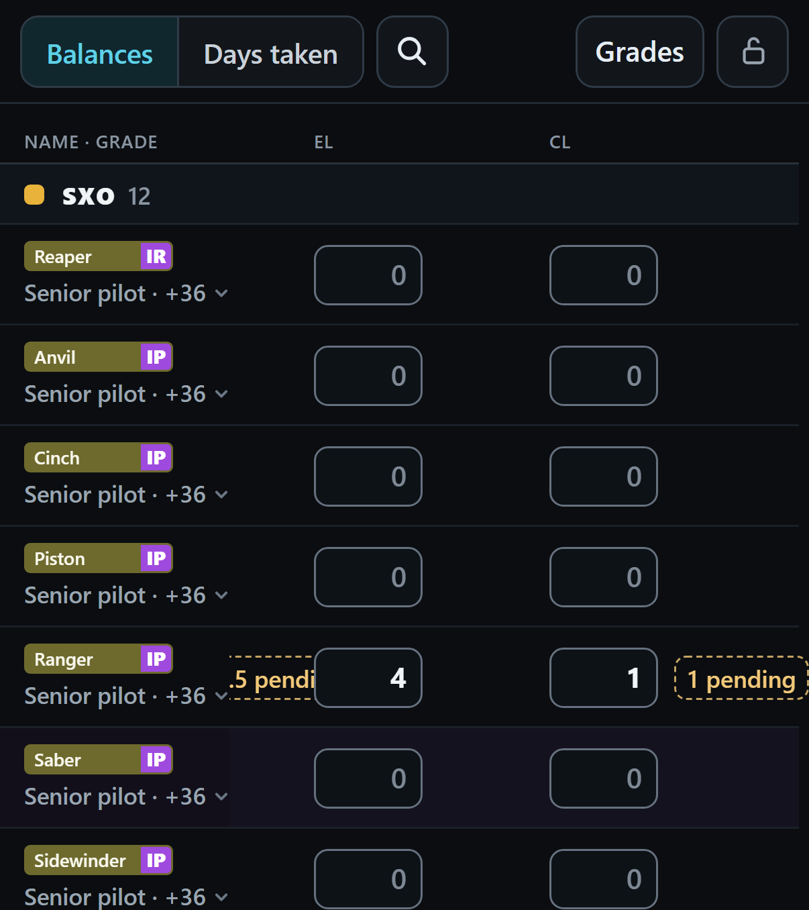<div class="mk" style="left:0;top:69%;width:100%;height:11%"></div></div><p class="cap">A, slid</p></div>
      <div class="shot"><div class="frame">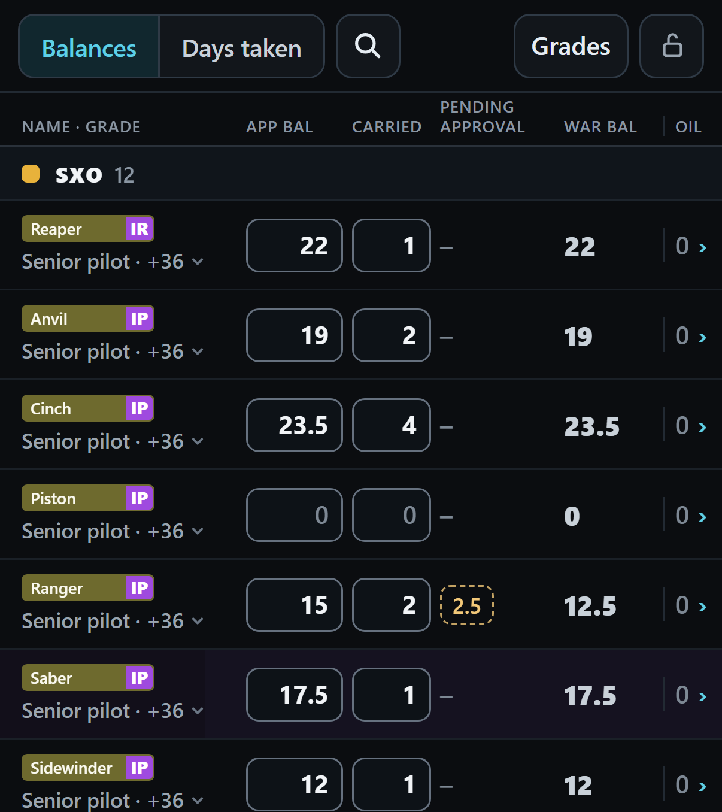<div class="mk" style="left:0;top:69%;width:100%;height:11%"></div></div><p class="cap">B</p></div>
      <div class="shot"><div class="frame">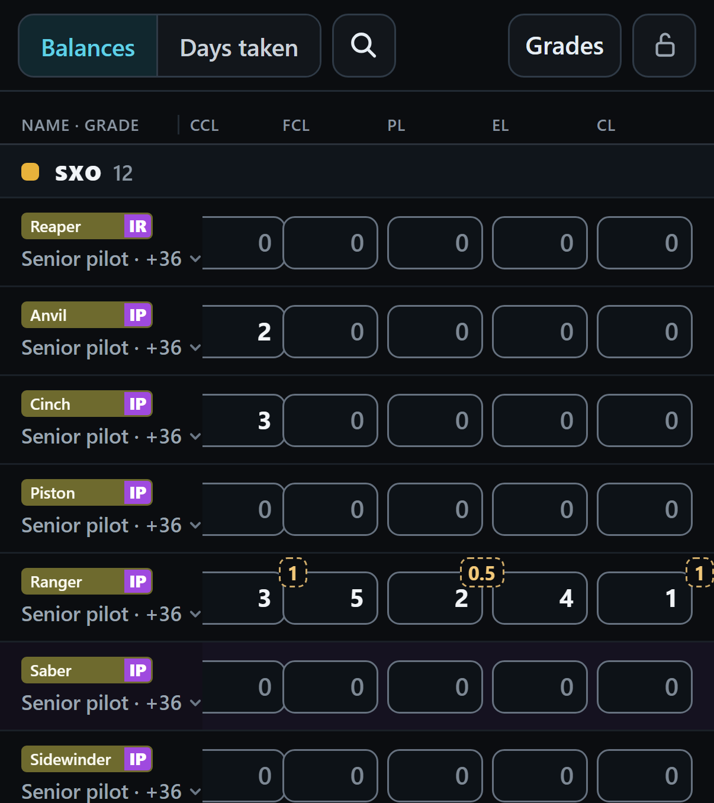<div class="mk" style="left:0;top:69%;width:100%;height:11%"></div></div><p class="cap">B, slid</p></div>
      <div class="shot"><div class="frame">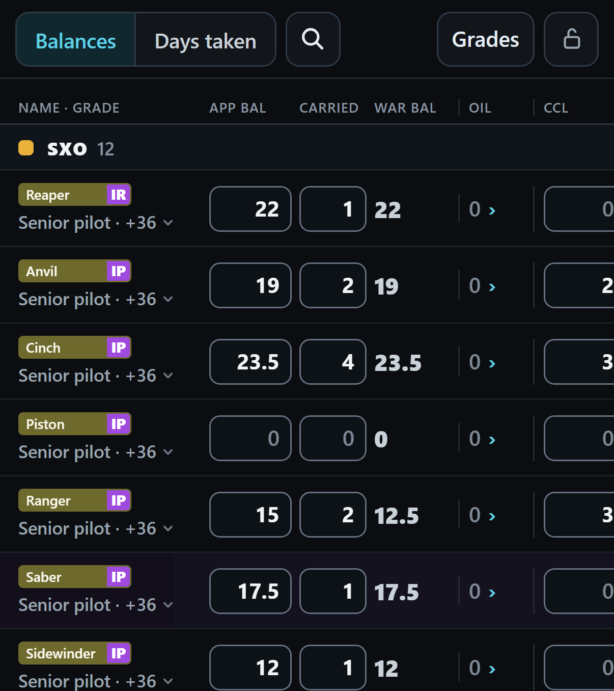<div class="mk" style="left:0;top:69%;width:100%;height:11%"></div></div><p class="cap">C</p></div>
      <div class="shot"><div class="frame">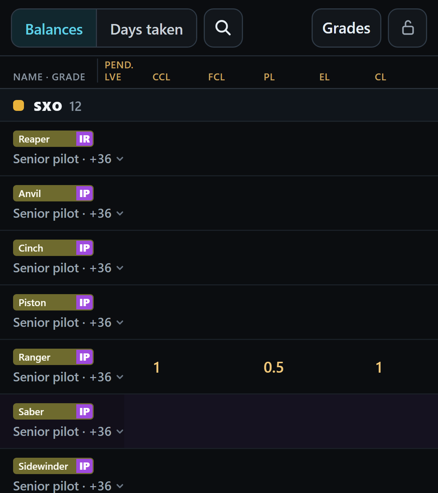<div class="mk" style="left:0;top:69%;width:100%;height:11%"></div></div><p class="cap">C, slid</p></div>
    </div>
    <p class="cap">What stays the same in every option: the boxes, their sizes and colours; App bal, War bal and the grade box; OIL read only with ›; the phone's names that stay while the figures slide, and its pinch. Only the headings' places, the column widths and the pending look change.</p>
  </section>

  <hr>

  <section id="ring">
    <h2>2 · The ring on the day under the mouse (PC only)</h2>
    <div class="two">
      <div class="shot"><h3>Today</h3><div class="frame"><div class="mk" style="left:61%;top:45%;width:6%;height:13%"></div></div><p class="cap">The mouse is over the marked day in Drifter's row. Only a faint tint runs along the row, so the day itself is hard to pick out.</p></div>
      <div class="shot"><h3>Proposed</h3><div class="frame"><div class="mk" style="left:60%;top:43%;width:8%;height:17%"></div></div><p class="cap">The same day now has a thin cyan ring with a hollow middle. The faint row tint stays.</p></div>
    </div>
    <div class="shot"><h3>Beside a tapped day</h3><div class="frame" style="max-width:520px"><div class="mk" style="left:46%;top:44%;width:7%;height:15%"></div><div class="tag" style="left:40%;top:62%">tapped</div><div class="mk" style="left:60%;top:44%;width:7%;height:15%"></div><div class="tag" style="left:60%;top:62%">mouse</div></div><p class="cap">Left: a day you tapped (its window open at the right) keeps its faint cyan fill. Right: the day under the mouse has the same ring but no fill, so a day you are only pointing at never looks picked. On a phone nothing changes, because there is no mouse.</p></div>
  </section>
</main>
<dialog id="z"></dialog>
<script>
const d=document.getElementById('z');d.appendChild(document.createElement('img'));
document.querySelectorAll('.frame img').forEach(i=>i.addEventListener('click',()=>{d.querySelector('img').src=i.src;d.showModal()}));
d.addEventListener('click',()=>d.close());
</script>
